Главные цвета Хэллоуина – чёрный и оранжевый. Чёрный цвет символизирует негатив, а оранжевый – сбор урожая в уходящем году.
Хэллоуин является вторым по дороговизне праздником после Рождества. Только в Америке на его подготовку тратится около 2,5 миллиардов долларов. На Хэллоуин американцы покупают более 272 млн кг конфет.
Праздник внесён в список самых распространённых фобий среди детей. Зовётся это самайнфобией.
В городах Америки запрещено играть в «Кошелёк или жизнь» детям старше 12 лет. Подростков могут оштрафовать на сумму от 100 до 1000 долларов.
Практически на всех картинках к празднику изображают идеально круглую луну. Это придаёт мрачности и антуража празднику. Однако в действительности полнолуние попадает на Хэллоуин очень редко. За последние сто лет это наблюдали в 1955 году, затем в 2001 и 2020.
Канун Дня всех святых первоначально носил название «All Hallows Even», как сокращение от английского «evening» — «вечер». Позже его стали называть «Hallowe’en», и, в конце-концов — «Halloween».
У нас гадают в ночь перед Рождеством, а во многих странах на Хэллоуин. Например, девушка должна повесить мокрую простыню перед огнём, чтобы увидеть будущего мужа. Или срезать кожуру с яблока и бросить через плечо, чтобы увидеть первую букву имени суженого.
Одним из символов праздника является чёрная кошка. А боязнь их пришла из средневековья, с тех времён, когда люди верили, что ведьмы для своей маскировки превращались в чёрных кошек.
Человек, который УБИЛ ХЭЛЛОУИН [Страшно Реально]
ХЭЛЛОУИН | История праздника
33 Страшных факта о Хэллоуине
Варианты “trick-or-treating” – “уловка или угощение” или по современному “Кошелек или жизнь” существовали еще со времен средневековья. В прошлом это было известно как “молитвы за угощения” со своими особенными “кексами души”. Бедные дети и взрослые переходили из дома в дом в костюмах призраков, получая эти кексы в обмен на молитвы за усопших семьи дарителя. Костюмы играли важную роль в этом мероприятии. Люди верили, что в ночь на Halloween по земле ходят призраки, поэтому одевали страшные костюмы, в надежде их отогнать.
“Белый дом” полон привидений.
В самых известных выступлениях в Соединенных Штатах есть несколько сообщений о появлении призраков и странных звуках! Самый распространенный призрак – Авраам Линкольн, которого обнаружили первая леди Элеонора Рузвельт, королева Нидерландов Вильгельмина и сэр Уинстон Черчилль. Среди других сверхъестественных гостей – Эндрю Джексон, Дэвид Бернс и Эбигейл Адамс.
Что такое Хэллоуин?
История Хэллоуина и как его празднуют сегодня
История Хэллоуина и как его празднуют сегодня
Краткая история ХЭЛЛОУИНА
Жуткие Факты о Хэллоуин